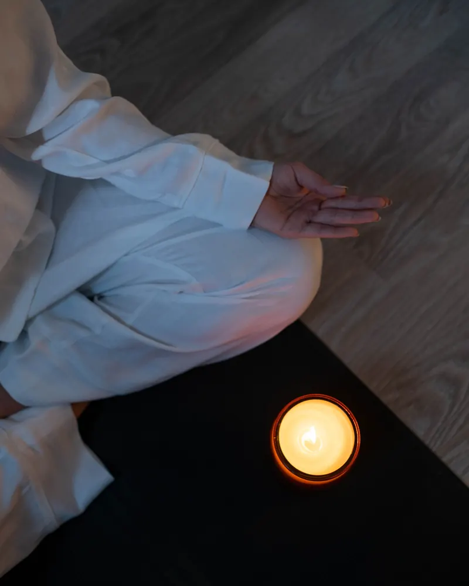
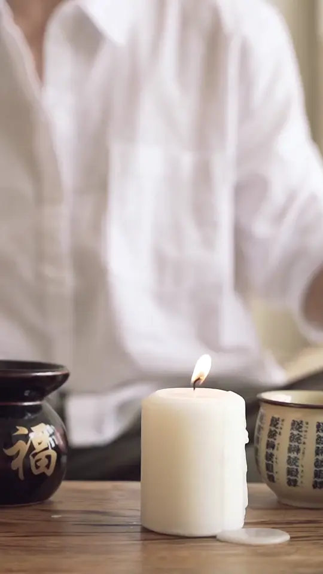
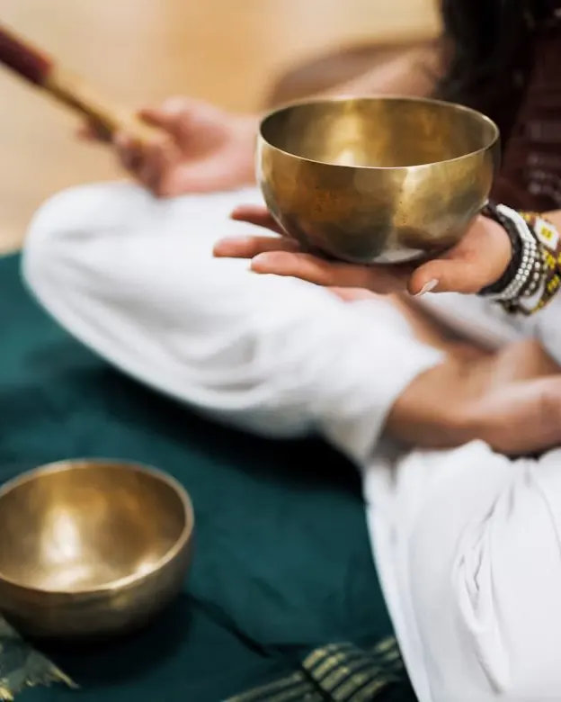
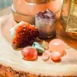

Terapia Corporal Bioenergética
Trabajo corporal que integra respiración, movimiento y contacto para liberar tensiones acumuladas y recuperar el libre flujo de tu energía.
Consultar por esta terapia >
Un espacio de acompañamiento terapéutico que integra cuerpo, mente, emociones y espíritu, a través de terapias holísticas y corporales bioenergéticas. Acompañamiento terapéutico que integra cuerpo, mente, emociones y espíritu.
Reservá con descuento
Soy Nicolás Chaina. Desde 2019 me dedico a las terapias holísticas y corporales bioenergéticas, acompañando procesos de transformación, autoconocimiento y bienestar integral.
Mi propósito es ofrecerte un espacio de encuentro con tu propia naturaleza: reconocer patrones, explorar bloqueos y reconectar con tu cuerpo, tus emociones y tu energía, a tu ritmo.
Cada persona tiene su propia manera de habitar el cuerpo.
Ver terapias >Videos sobre energía, bienestar y terapias holísticas.
Un abordaje integral donde distintas terapias se encuentran para ofrecerte un espacio seguro de escucha y transformación.

Claridad
Trabajo corporal que integra respiración, movimiento y contacto para liberar tensiones acumuladas y recuperar el libre flujo de tu energía.
Consultar por esta terapia >Técnica suave de imposición de manos que armoniza cuerpo, mente y espíritu. Libera tensiones y permite que la energía vital fluya naturalmente.
Consultar por esta terapia >Esencias naturales para equilibrar emociones y pensamientos. Favorece la claridad mental y la sanación emocional desde la raíz.
Consultar por esta terapia >Método energético que libera creencias y emociones limitantes. Permite un estado de calma mental y apertura a nuevas posibilidades.
Consultar por esta terapia >Conexión con la sabiduría ancestral y la sanación interior. Un camino hacia la expansión de conciencia y la transformación espiritual.
Conocé la Rueda Medicinal >Las cuatro direcciones del Chamanismo Evolutivo. Tocá cada animal para conocer su instancia.
Combustión de Hucha
[Explicación de Nico sobre la Combustión de Hucha]
La Rueda Medicinal propone un recorrido integral de cuatro instancias. Sin embargo, cada proceso es único: según el momento vital y las necesidades de cada persona, podemos trabajar una dirección en particular o transitar el recorrido completo.
Respondé unas preguntas cortas y te llega todo armado a mi WhatsApp. Así puedo orientarte mejor desde el primer mensaje.